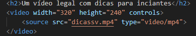

Informações
Site feito por: Matheus Batista Medeiros
Fontes:
- Informações e imagens dos personagens e presentes retiradas de Stardew Valley Wiki
- Som da galinha retirado de Pixabay
- Imagem da galinha retirado de PikPNG
- Imagem da fazenda e das folhas caindo retiradas de Pinterest
- Fontes retiradas de Google Fonts
- Vídeos retirados do canal de Edu Anttunes
- Logo criada por mim
Itens opcionais (ponto extra)
(3-10%) Criar algo interativo na página usando JavaScript.
const container = document.getElementById('leaves-container');
function createLeaf() {
const leaf = document.createElement('div');
leaf.classList.add('leaf');
leaf.style.left = Math.random() * window.innerWidth + 'px';
leaf.style.animationDuration = 5 + Math.random() * 5 + 's';
leaf.style.width = 20 + Math.random() * 40 + 'px';
leaf.style.height = leaf.style.width;
container.appendChild(leaf);
leaf.addEventListener('animationend', () => {
leaf.remove();
});
}
setInterval(createLeaf, 1500);(5-10%) Colocar animações, transições e transformações: hover nos personagens
(2-5%) Easter eggs usando CSS ou JavaScript: clicar na galinha
(5%) Alguns elementos com posicionamento não estático: galinha fixed e o quadro sticky
(3%)Exibição de um vídeo sobre o tema (o código)
